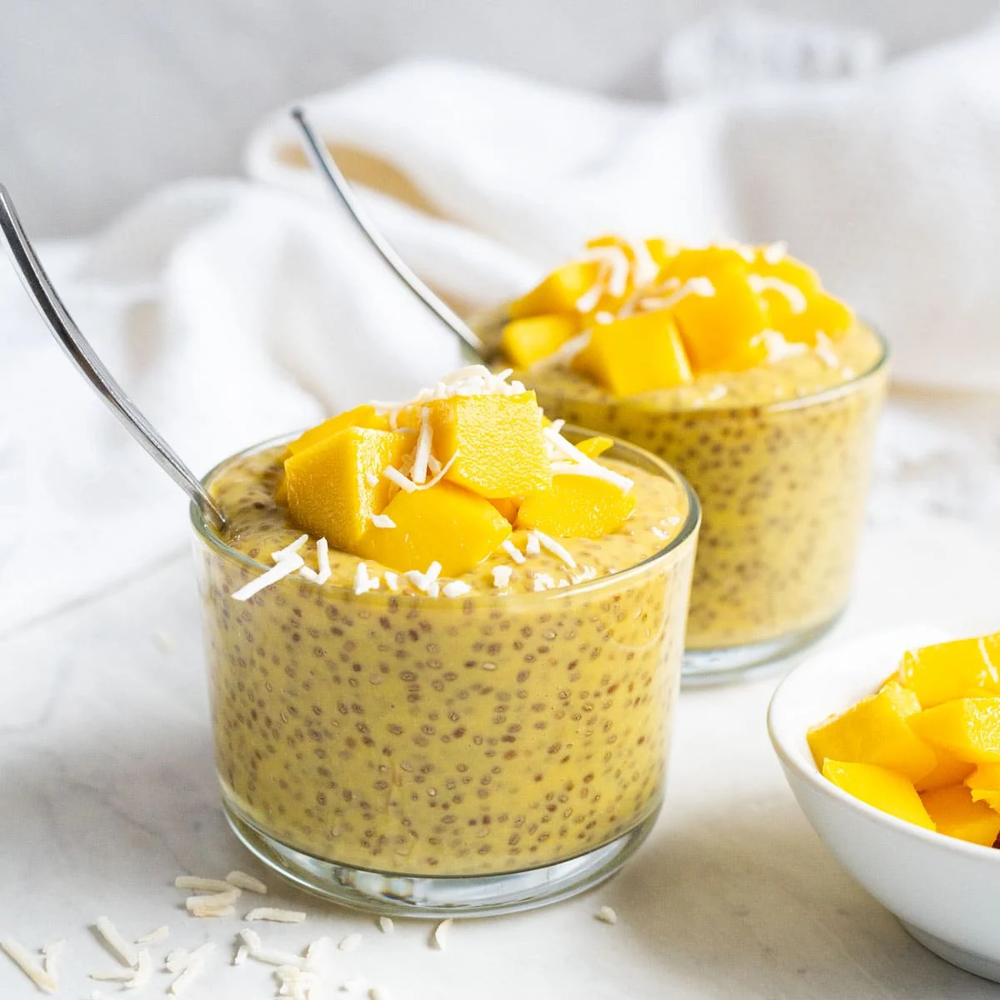

Chia Pudding

Mango Chia Pudding
Ingredients
- Chia Seeds
- 1 cup fresh chopped mango
- 3/4 cup almond milk
- 3/4 cup coconut cream
- 1 TBsp Agave nectar
Steps
- Mix the chia seeds, almond milk, agave nectar, and coconut cream
- Chill overnight
- Puree the mango
- Split chilled mixture into 2 cups
- Mix half of the mango puree into each cup